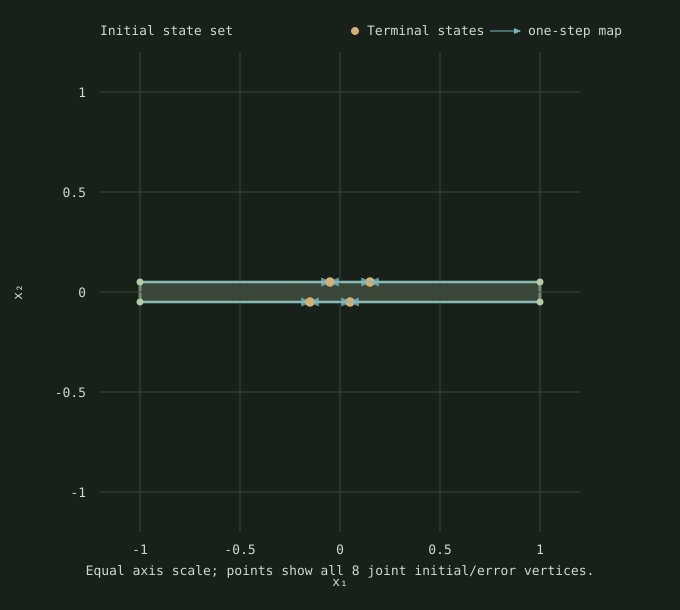

The synthesizer finds an action affine in a sensor sample available before the decision. The two-state plant is x⁺=[[1,1],[0,1]]x+[-1,0]ᵀu; the sensor reports y=x₁+e with |e|≤0.1. The joint initial/error set has eight vertices. The returned policy and replay cover all eight authored vertices under numerical binary64 checks.

For this fixture, the saved result has gain 1.00090905455 and offset 0. The objective is feasibility only; this policy is not cost-optimal. The LP provider reports a feasible primal, and the controller evaluator plus an independent plant calculation check all generator trajectories and safety rows.
Seven measured batches of 100 synthesis calls after one excluded warmup. Median 481.763 ms per batch (4817628.1 ns/call); range 471.195–584.909 ms. Each interval includes LP construction/solve, full-domain replay, and literal checks. Fixture construction, process startup, JSONL serialization, and rendering are excluded.
| Round | Batch ms | ns/call |
|---|---|---|
| 1 | 584.909 | 5849088.0 |
| 2 | 507.281 | 5072810.6 |
| 3 | 481.763 | 4817628.1 |
| 4 | 474.173 | 4741727.4 |
| 5 | 488.828 | 4888276.6 |
| 6 | 472.058 | 4720576.5 |
| 7 | 471.195 | 4711946.2 |
Build with CSL_BUILD_EXT04_AFFINE_SYNTHESIS_REPORT=ON, run csl_ext04_affine_synthesis_report smoke and then measure. The bundle includes the exact C++ driver, fixture, raw JSONL, saved result, independent renderer, Release build log, and checksums.
Source commit 7eadf7c7ecbb2bbdc28683ebcdfc31849f01c133. Fixture · Result · Raw trials · Smoke output · Environment · CSV · Driver · Records · Renderer · Offline ZIP.